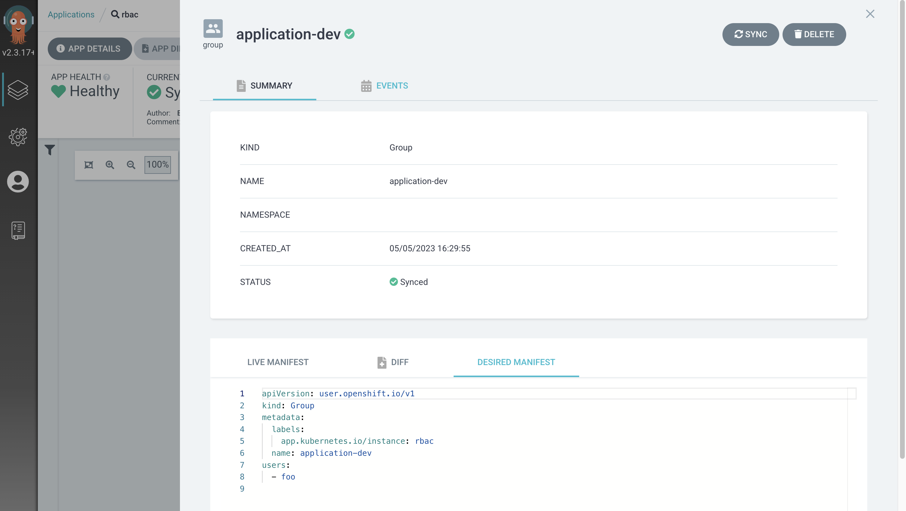
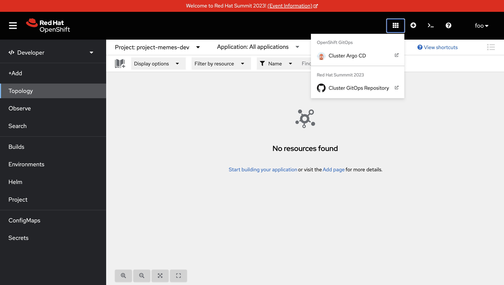

Verifying & Understanding the AppProject and RBAC Rules ⏱️ Estimated Time: 5 Minutes 👨💻 Role: Cluster Administrator and/or Developers Explore your new Applications and Project with Custom RBAC Before moving on and seeing the effects of the newly synced Application resources, review the group.developers.yaml and group.operations.yaml files. These are simple Group CRs that define a list of Users that are part of a Group. You could add more users to the users list in either of these resources if you wanted to in the future. For the purposes of this workshop we need only small groups. Realistically, you’d probably add multiple users to a group. View these synchronised files in Argo CD: Login to the Argo CD dashboard as the admin user. Select the rbac application. Click the application-dev resource in the tree view. An overlay will appear. Select the Desired Manifest tab in the overlay.  This Group CR defines corresponds to the group.developers.yaml file, and creates a group named application-dev that contains a single user named foo. The application-ops Group contains the bar user. Next, take a look at the argo-projects Application: Login to the Argo CD dashboard as the admin user. Select the argo-projects application. Click the application-dev resource in the tree view. An overlay will appear. Select the Desired Manifest tab in the overlay. This file is synchronised from the argocd-projects/app-project.memes.yaml in your Git repository - it’s important and contains various comments explaining what it does! The main thing to take away is that it: Creates an AppProject. Supports multiple destinations (target clusters), though there’s only one defined in this example; the local cluster into which it has been applied. Limits the target Namespaces to project-memes-dev and project-memes-prod, and does not whitelist any cluster-scoped resources. This is important; we want to restrict this project to managing only resources in a the defined Namespaces and not at the cluster-level! Defines two roles: foo-development and foo-operations. Users in the application-dev and application-ops Groups created previously are associated with these, respectively. Defines independent RBAC policies for the foo-development and foo-operations roles. Now that the rbac and argo-projects Application resources are synchronised, verify they had the desired effect. Verify the Policies & RBAC It’s time to verify the AppProject, Group, and the roles and policies were applied as expected to the foo user. First, you’ll need to log out and log in again to make sure the Group/RBAC changes are detected and applied by the Argo CD instance: Create a private browsing session in your web browser. Login to the OpenShift Web Console as the foo user by following these steps: Select the standard-users identity provider. Enter the username: foo. Enter the password: foopassword. Click the Log in button. Expand the Application Launcher icon (3x3 square) in the top-right of the OpenShift Web Console.  Click the Cluster Argo CD link. This will open a new browser tab. Accept the self-signed certificate warning if one appears. The login page will now appear. Click the Log in via OpenShift button. Login using the same standard-users identity provider, the foo username, and the foopassword password you used previously when prompted. Confirm that Argo CD can see that the foo user is a member of the application-dev Group: Click the User Info icon on the left-hand menu in the Argo CD dashboard. Confirm that the foo user’s info shows that they’re part of the application-dev Group: Next, confirm the AppProject and roles: Click on the Settings (cog/wheel) icon on the left-hand menu in the Argo CD dashboard. Select Projects from the list of items. A project-memes Project should be listed. Click on the project-memes item in the Project list. Switch to the Roles tab and confirm that the memes-development and memes-operations items are listed. Click on the memes-development role. An overlay should appear. Confirm that the the Groups section in the overlay shows that the users in the application-dev group are bound to memes-development role in this Argo CD Project. Summary Congratulations! You learned how to: Bootstrap a cluster with a set of Applications, templated using a Helm chart. Define Groups in OpenShift, and add OpenShift users to those Groups. Create Projects, Roles, and Policies in Argo CD using AppProject CRs. In the next section you’ll learn how to implement continuous deployment for a containerised application using Argo CD. The App of Apps Setup